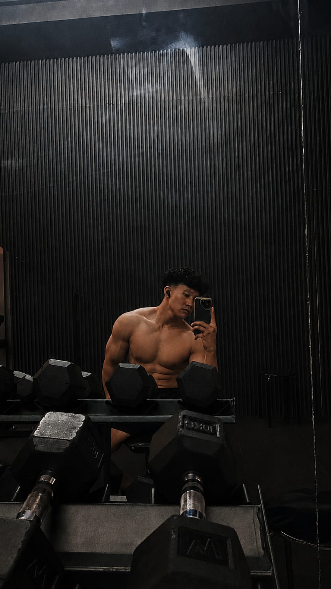

01
STRENGTH TRAINING
Melatih kekuatan secara bertahap dengan fokus pada gerakan dan teknik yang baik.
FOKUS LATIHAN01
HALO, SAYA
Membangun versi diri yang lebih kuat—satu repetisi, satu hari, satu langkah dalam satu waktu.
Saya suka dunia fitness, latihan beban, dan proses kecil yang membentuk kebiasaan besar. Buat saya, gym bukan cuma soal penampilan, tapi juga disiplin dan perkembangan diri.

Tapi tentang menjadi sedikit lebih baik dari diri kita yang kemarin.
Perkenalkan, saya Gernd Aditya Sapoetra. Saya sedang menikmati perjalanan membangun tubuh yang lebih kuat dan pola hidup yang lebih sehat lewat latihan yang konsisten.
Saya percaya progres nggak selalu terlihat setiap hari. Yang penting adalah tetap belajar teknik yang benar, menghargai proses, beristirahat cukup, dan terus kembali berlatih.
Small steps. Strong habits. Long-term results.
Hal-hal yang ingin terus saya asah dalam perjalanan fitness.
Melatih kekuatan secara bertahap dengan fokus pada gerakan dan teknik yang baik.
Membangun rutinitas yang realistis, teratur, dan bisa dijaga dalam jangka panjang.
Memahami pentingnya pemanasan, mobilitas, tidur, dan waktu pemulihan.
Catatan: bagian ini menggambarkan fokus pribadi, bukan sertifikasi atau klaim sebagai pelatih profesional.
Catatan dan ide yang bisa dikembangkan selama perjalanan latihan—bukan klaim proyek profesional.
Konsep jurnal untuk mencatat jadwal latihan, set, repetisi, dan perkembangan beban dari minggu ke minggu.
Kembangkan ide ini ↗Ide tantangan kebiasaan sehat untuk membantu menjaga rutinitas latihan, tidur, hidrasi, dan pemulihan.
Kembangkan ide ini ↗Kumpulan catatan pribadi untuk mempelajari teknik dasar, istilah latihan, dan prinsip progres secara aman.
Kembangkan ide ini ↗Punya tips latihan, ingin bertukar cerita tentang gym, atau sekadar menyapa? Kirim pesan lewat email.
Email saya ↗Ganti hello@example.com dengan alamat email milikmu sebelum website dipublikasikan.